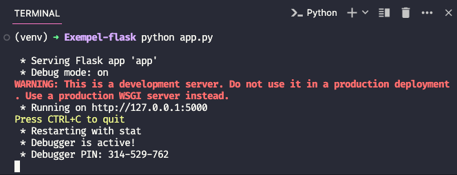

Flask är ett mikro-ramverk för att skapa webbapplikationer med Python. Man skulle kunna säga att Flask är programmet som körs på webbservern för att få hemsidor (och APIer osv) att visas för användaren. Flask är ett väldigt populärt ramverk och används av många stora företag som till exempel Netflix, Lyft och Pinterest.
Innan vi börjar
#Denna kurs är skriven för vana Python-utvecklare som vill lära sig Flask. Jag kommer inte att gå igenom andra paket som eventuellt kan behövas för att skapa en webbapplikation. Denna kurs fokuserar jag bara på att lära ut Flask.
Denna kurs kommer inte att förklara någon HTML eller CSS. Jag kommer att utgå ifrån att användaren har grundläggande kunskaper i HTML och CSS. Jag kommer att använda HTML och CSS för att skapa en enkel hemsida som jag sedan kommer att visa med hjälp av Flask.
Skapa en Virtuell Miljö
#En virtuell miljö i Python gör att du kan hålla dina projekt separerade med avseende på beroenden. Det betyder att varje projekt kan ha sina egna beroenden, oberoende av vilka beroenden andra projekt har.
Detta är bra att lära sig att ha som vana i alla projekt, men är inget måste att göra!
I VSCode skriv: i terminalen:
python -m venv venvAktivera den virtuella miljön:
Windows
.\venv\Scripts\activate
MacOS
source venv/bin/activate
När den virtuella miljön är aktiverad, kommer du se namnet på miljön
inom parenteser i din terminal, till exempel (venv)
Installera Flask
#Var noggrann med att den virtuella miljön är aktiverad innan du börjar installera Flask. Om du inte har aktiverat den virtuella miljön, kommer Flask att installeras globalt på din dator och eventuellt skapa problem!
pip install flaskFlask är nu installerat och du kan börja skapa din första Flask applikation, vi börjar enkelt, forsätt till nästa kapitel.
Den enklaste av applikationer
#
Nu när Flask är installerat kan vi skapa vår första applikation. Börja
med att säkerställa att allt funkar med att skapa en fil som heter
app.py och skriv följande kod:
from flask import Flask
app = Flask(__name__)
@app.route("/") # Dekoratör från flask
def index():
return "Hello World!"
if __name__ == "__main__":
app.run(debug=True)
På rad 4 använder vi en dekoratör;
@app.route("/").
Den kommer från paktet Flask och
används för att koppla en URL till en funktion. I detta fall så
kopplar vi URL:en "/" till funktionen index(). Detta
betyder att när en användare går till "/" så kommer funktionen
index() att köras.
Vad är index?
Förr var internet en samling av servrar och fungerade lite annorlunda
än idag. När man kom in på en server så fanns det ofta en fil som
hette index. Detta var den fil som listade
(indexerade) alla filer på servern och varför den kallades
för index. Detta har sedan dess blivit en standard för att visa en
startsida på en server.
På nästan alla server-typer används idag index.* som den
filen som letas upp om inget annat anges. Det är därför du kan skriva
google.com och komma till Google, istället för att skriva
google.com/index.html.
Nu kör vi!
#Kör din applikation genom att skriva följande i terminalen:
python app.py
Nu bör det se ut ungefär såhär i din terminal:

Notera att din terminals utseende skiljer sig säker från min,
texten ska va den samma
Om vi nu går till 127.0.0.1:5000 i vår webbläsare så bör
vi ungefär det här:
Nu har vi gjort vår första applikation! 🥳
Vad hände?
När vi kör app.py, så startas en lokal server på din
dator, detta är en server som är inbyggd i Flask. En sk.
development-server som är till för att utveckla applikationer. Detta
är inte en server som är till för att användas i produktion.
När vi går till 127.0.0.1:5000 så ber vi webbläsaren att
gå och leta på datorn efter en lokal server på datorn, i detta fallet
en server som lyssnar på port-nummret 5000.
Vad är localhost?
127.0.0.1, 0.0.0.0 eller
localhost är IP-adresser som är reserverad för att peka
på den egna datorn. Detta är en IP-adress som alltid kommer att peka
på din egen dator, oavsett vilken dator du sitter vid. Detta är en
IP-adress som kallas för localhost och används ofta för
att testa lokala servrar.